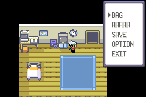
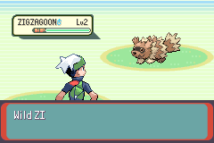
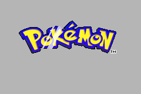
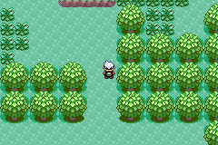

The client can read where the player is
mGBA now reads the local player's map, tile, facing, trainer ID and whether a game is running, straight from game memory, and logs it when it changes. It is the first real game state the co-op client sees.
A reader between the game's RAM and the console
Milestone 0.1 is a proof of concept: read the real player state from the running game. From 0.4 the ROM publishes its own state through the mailbox and this path is retired (#26). Addresses come only from the generated addresses.lua; struct offsets only from docs/memory-map.md.
One snapshot, replaced as a whole
Each read first asks whether a game session is running (sPlayTimeCounterState ≠ 0), then whether the field is running (gMain.callback1/2 are the overworld callbacks). Only then is a new position tuple read. During map loads, battles and full-screen menus the last tuple is kept, so a new map ID is never paired with old coordinates. On a soft reset the last tuple is reported once as hidden, then dropped.
The offset table
Every struct offset lives in one table at the top of client/memory.lua, each copied from docs/memory-map.md, which documents its decomp source and how it was verified. Pick a field.
Two choices worth checking
Read in keysRead, not frame
The emulator test caught a frame read that returned Route 101's map ID with Littleroot's coordinates (0:16 11,-1). A heavy loop iteration runs past the frame boundary: CameraMove had loaded the new map, UpdateObjectEventsForCameraUpdate had not shifted the coordinates yet. The game reads the keypad only at the top of its loop, when the last iteration is complete. This also corrects an older line in memory-map.md that assumed save block moves fit in one frame.
The bus is passed in
The issue puts the module at client/memory.lua. Taking emu as an argument keeps it free of mGBA globals, so memory_test.lua drives it with a fake little-endian bus and luacheck enforces it.
Fake memory, then the real game
15 fake-memory tests and luacheck in Docker (ubuntu:24.04, lua5.4, lua-check). Then mGBA 0.10.5 with a locally built ROM (SHA1 matches addresses.lua), driven by a throwaway harness that presses keys and saves the console log. Excerpts from that log:

1:1 5,2 EAST visible, no new line.
0:16 6,13 WEST is held and stays visible.
no position hidden.
0:16 11,18 NORTH visible.Where to look
Start with client/memory.lua (the offset table and getPlayerState), then the new "When to read" section in docs/memory-map.md. Your ticks are saved in this browser only.